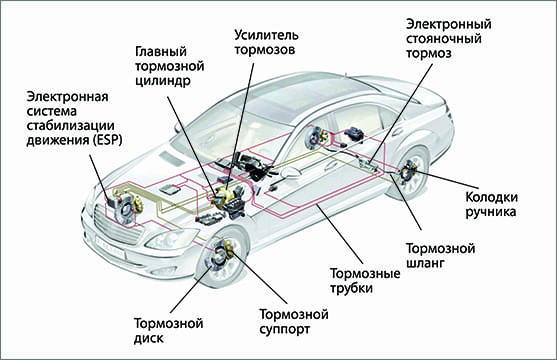
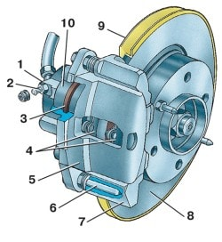
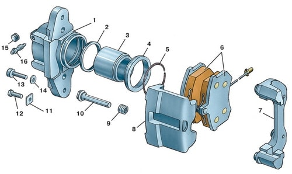
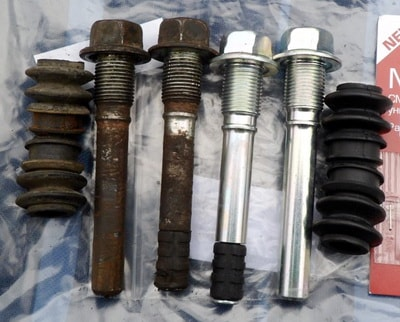

Снятие, установка и ремонт тормозных суппортов в рассрочку на СТО "КапеллаПлюс" в Минске
Устройство тормозной системы и диагностика неисправности суппорта
 Начнем с устройства тормозной системы автомобиля и принципа работы тормозного суппорта.
На рисунке слева показаны основные узлы современной тормозной системы автомобиля.
Эффективность торможения автомобиля обеспечивается совокупностью множества различных компонентов и механизмов системы, включающей в себя такие как ESP (электронная система стабилизации движения), ABS (антиблокировочная система торможения), система усиления торможения и совокупность механизмов и узлов непосредственно осуществляющих торможение и остановку транспортного средства. Нет необходимости много говорить о важности исправной работы этих узлов и механизмов для безопасности движения на автомобиле. Одним из таких немаловажных узлов и является тормозной суппорт колеса, отвечающий за конечное преобразование усилий от нажатия педали тормоза в замедление вращения и полную остановку вращающегося колеса автомобиля. Как же это происходит?
Тормозной суппорт представляет собой деталь в виде скобы, как бы обнимающую тормозной диск колеса с обеих сторон. При нажатии водителем педали тормоза создается давление тормозной жидкости в системе. Это давление передается на поршни в тормозном суппорте. Как правило, таких поршней в суппорте один или два. В современных автомобилях количество этих поршней может достигать четырех, а в спортивных моделях доходить до восьми.

Тормозной механизм плавающего типа: 1 – цилиндр; 2 – клапан выпуска воздуха; 3 – кольцо уплотнительное; 4 – колодки тормозные; 5 – суппорт; 6 – палец направляющий; 7 – направляющая колодок; 8 – тормозной диск; 9 – щит тормоза; 10 – поршень
Эти поршни создают огромное давление на тормозные колодки, прижимая их к диску, тем самым замедляя вращение тормозного диска колеса вплоть до полной его остановки за счет трения фрикционного материала колодок о поверхность диска. Устройство тормозного суппорта достаточно простое и представлено на двух рисунках ниже. На большинстве серийных авто устанавливаются суппорта плавающего типа. Это тип тормозных суппортов с плавающей (подвижной) одной стороной скобы, перемещающейся по направляющим пальцам (см. рис). В отличие от фиксированного типа суппортов в плавающем давящий поршень расположен только с одной стороны диска.

Суппорт: 1 – цилиндр; 2 – кольцо уплотнительное; 3 – поршень; 4 – пыльник; 5 – кольцо стопорное; 6 – колодка тормозная; 7 – направляющая колодок; 8 – суппорт; 9 – чехол защитный; 10 – палец направляющий; 11 – шайба стопорная; 12 – болт крепления направляющего пальца; 13 – болт крепления цилиндра к суппорту; 14 – шайба; 15 – колпачок клапана; 16 – клапан выпуска воздуха
С другой стороны диска расположен упор скобы с установленной второй тормозной колодкой. В момент торможения поршень давит сначала на одну колодку, находящуюся перед ним прижимая её к диску. Когда колодка прижмется к диску, плавающий суппорт начинает перемещаться по направляющим в сторону от диска, прижимая тем самым вторую, противоположную, колодку к диску. У фиксированного типа тормозных суппортов поршни расположены с обеих сторон диска и поэтому давление на обе колодки происходит одновременно. Данный тип суппорта дороже и поэтому в основном устанавливается в более дорогих моделях с большим диаметром колес. С фиксированным типом суппортов меньше хлопот, так как нет главной проблемы плавающего типа тормозных суппортов - постоянно закисающих и требующих периодической смазки или замены направляющих пальцев вместе с пыльниками (см. рис ниже). Постоянно летящая из-под колес грязь и вода попадая на суппорт проникает сквозь изношенные пыльники направляющих пальцев, забивая направляющий канал. Как результат, плавающий суппорт перестает свободно перемещаться относительно диска и колодки остаются в фиксированном положении, переставая выполнять свою главную функцию - остановка вращения диска колеса.
К наиболее частым основным неисправностям обоих типов тормозных суппортов относятся:

- утечка тормозной жидкости (причина может крыться в нарушении герметичности соединения тормозных трубок с суппортом);
- разбухание или повреждение уплотнительных манжет в тормозных цилиндрах, в которых двигается поршень, что тоже может являться причиной утечки тормозной жидкости;
- попадание воздуха в цилиндры и тормозные трубки-магистрали подходящие к ним;
- закисание поршней в цилиндрах с потерей их подвижности и силы, прижимающей тормозные колодки;
- закисание направляющих пальцев в следствие разрыва пыльников (для суппортов плавающего типа)
Стоимость работ и условия оплаты ремонта тормозных суппортов на СТО КапеллаПлюс в Минске
Мы проводим ремонт и замену тормозных суппортов любого типа. Цены на ремонт суппортов у нас на СТО варьируются в пределах от 35 до 45 бел.руб. за ремонт одного суппорта. Продолжительность ремонта обычно составляет не более часа-двух в зависимости от закорелости механизма.
Помимо ремонта суппортов мы осуществляем замену дисковых и барабанных тормозных колодок, замену тормозной жидкости, замену тормозных трубок, дисков, ремонт ручного (стояночного) тормоза, замену тросов ручника, разработку тормозов.
Цена замены передних дисковых тормозных колодок у нас на СТО в Минске составляет 15-20 руб.;
Цена замены задних дисковых тормозных колодок - 20-25 руб.
Цена замены тормозных дисков с колодками: передних - 35-45 руб., задних - 40-55 руб.
Цена замены тормозных трубок зависит от длины заменяемого участка и может доходить до 120 руб. (при замене всей магистрали), стоимость самих трубок рассчитывается исходя из цены 5 руб за метр трубки.
Цена работы по замене тросов ручника - 40-80 руб.
На все работы, выполняемые у нас на СТО в Минске, для держателей карт рассрочки "Карта покупок" или "МАГНИТ" действует РАССРОЧКА на 6 месяцев. Цены на услуги при оплате в рассрочку не меняются. Мы предоставляем ЧЕСТНУЮ рассрочку на оплату наших услуг без скрытых комиссий и двойных цен. Если у Вас нет карты рассрочки, то оформить их можно через интернет в кратчайшие сроки без особых проблем. Ссылки на страницы банков для оформления карт рассрочки Вы найдете на главной странице нашего сайта здесь.
Мы используем только качественные материалы и запчасти для смазки и замены вышедших из строя частей.
Все необходимые запасные части для ремонта тормозного суппорта и всей тормозной системы мы можем приобрести самостоятельно по очень привлекательным ценам. Опытный мастер даст совет по выбору качественных запасных частей для ремонта суппорта. Подскажет к качеству каких запчастей стоит подойти более тщательно.
На все, производимые на нашей СТО в Минске, работы по ремонту суппорта Вы получите от нас ОФИЦИАЛЬНУЮ ГАРАНТИЮ 2000 км или 30 дней. Но даже по истечении этого срока мы не бросаем своих клиентов и, если гарантийный случай наступил не в результате естественного износа, а по нашей вине, то мы исправим и заменим вышедшие из строя части за свой счет.
В дополнение к любому ремонту авто мы выполним бесплатную диагностику всей подвески и ходовой части Вашего автомобиля. Проведем компьютерную диагностику двигателя на наличие ошибок.
Узнать стоимость ремонта суппорта или других услуг по ремонту именно Вашей марки автомобиля Вы можете задав свой вопрос мастеру на  +375 (29) 607-49-07 или оставив свой номер телефона в поле снизу, и, как только мастер освободится, он перезвонит Вам, ответит на все Ваши вопросы и запишет на диагностику или ремонт Вашего автомобиля на удобное для Вас время.
+375 (29) 607-49-07 или оставив свой номер телефона в поле снизу, и, как только мастер освободится, он перезвонит Вам, ответит на все Ваши вопросы и запишет на диагностику или ремонт Вашего автомобиля на удобное для Вас время.
Вы можете оплатить услуги по ремонту суппорта, а также приобретенных запасных частей в РАССРОЧКУ!!! Условия оплаты ремонта суппорта, а также других услуг по ремонту авто в рассрочку указаны в шапке нашего сайта.
 РАССРОЧКА
РАССРОЧКА